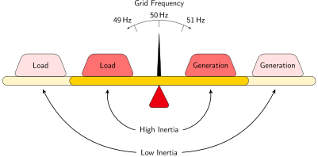

Inverter Inertia Emulation
My bachelors thesis about emulating inertia with battery inverters

The rotational inertia of the turbines in conventional generators (such as gas and coal) helps stabilise the frequency of the electricity grid. Batteries and most renewable generation sources do not exhibit such inertial behaviour. Therefore grids with high penetration levels of renewables and batteries will have large and rapid frequency deviations, which is undesirable.
Inverters can be programmed to mimic the inertial behaviour of conventional generators, thereby contributing inertial support to the grid even though they lack physical inertia. For batteries such functionality has been simulated but not experimentally verified.
In my bachelors thesis I added droop control and inertia emulation to the control system of a programmable inverter. Experimental testing confirmed that this functionality successfully controls the output power to closely match the behaviour of a system with real inertia. The reaction time of this inertia emulation is 200 milliseconds, which is fast enough to be useful during most credible contingencies in the Australian grid. The system developed in this thesis works sufficiently well, and will help address frequency regulation issues in the high-renewables, low inertia grids of the future.
I can provide a copy of the relevant code upon request.